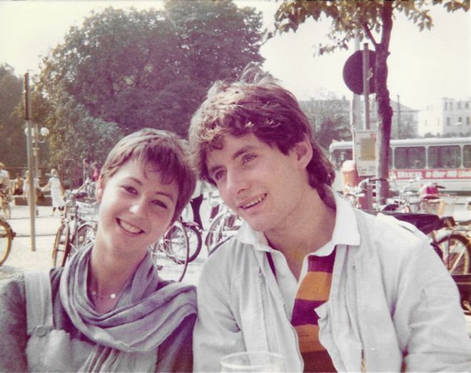
I'd come to Bonn to stay with Gregor König whom I had met the year before at a Kate Bush concert in London, when she played at the London Palladium and, later, at the Hammersmith Odeon. He was a budding music journalist.
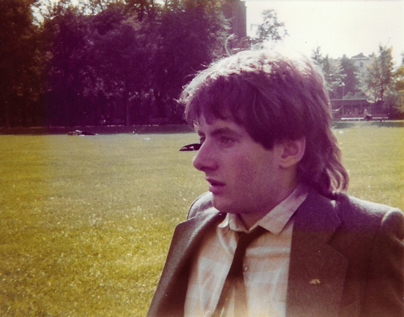
There wasn't a huge amount to do in Bonn: it enjoyed a reputation as a city of administration and bureaucracy.
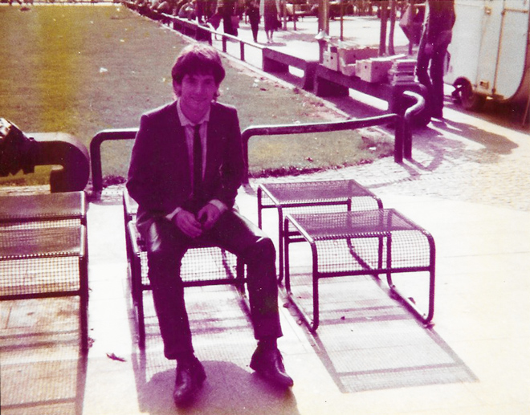
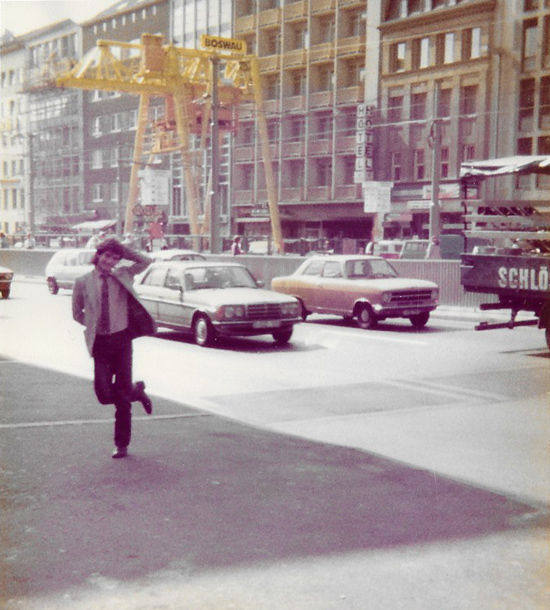
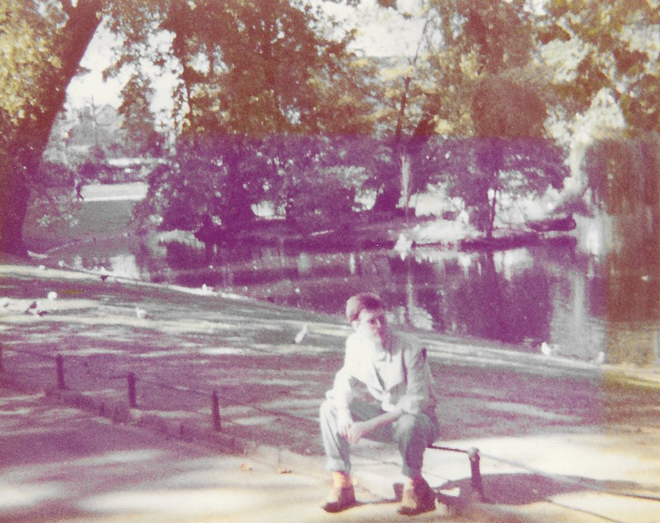
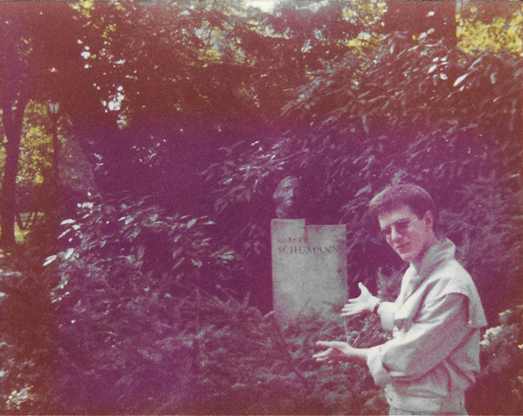
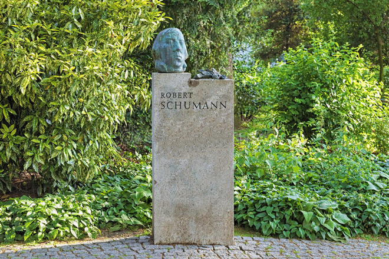
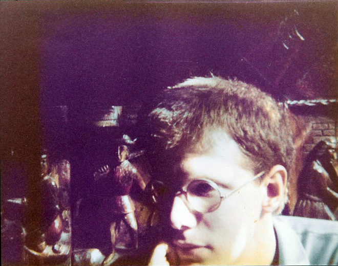
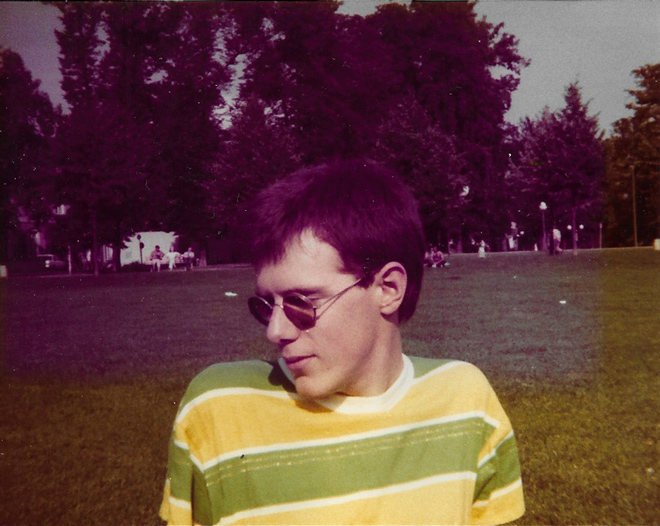
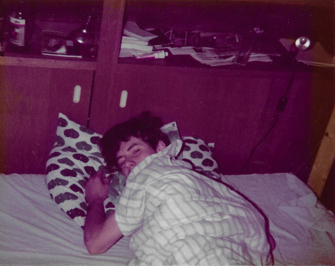
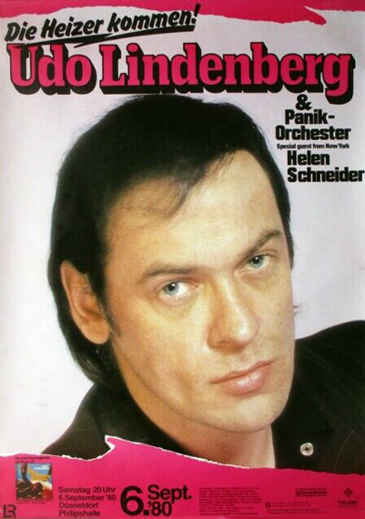
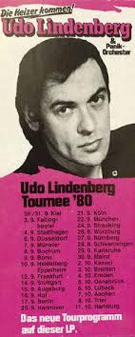
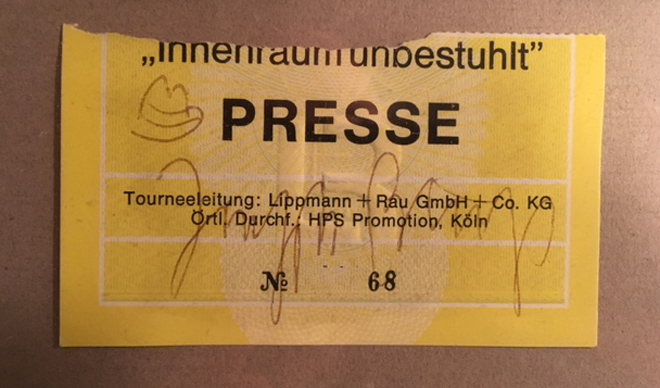
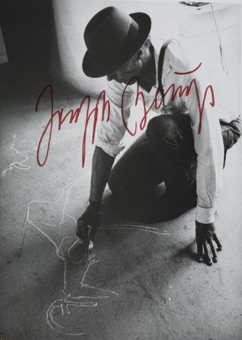
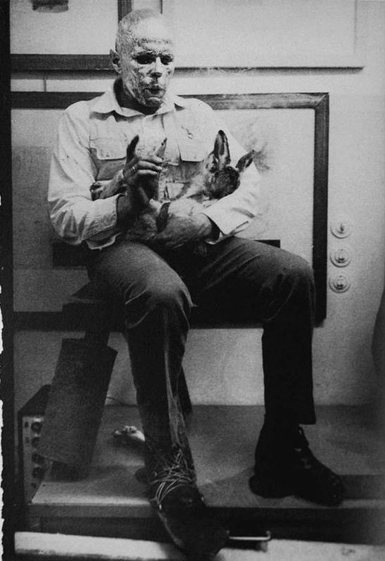
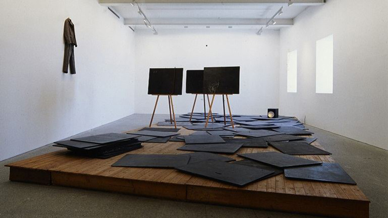
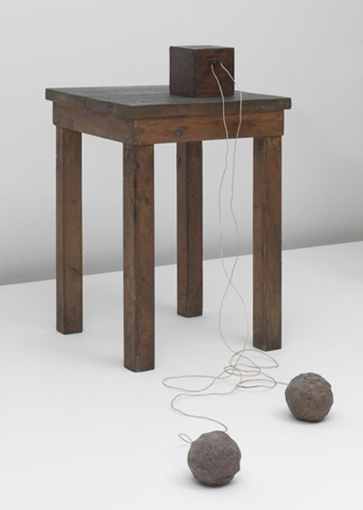
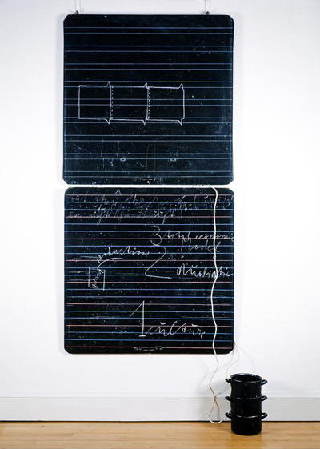
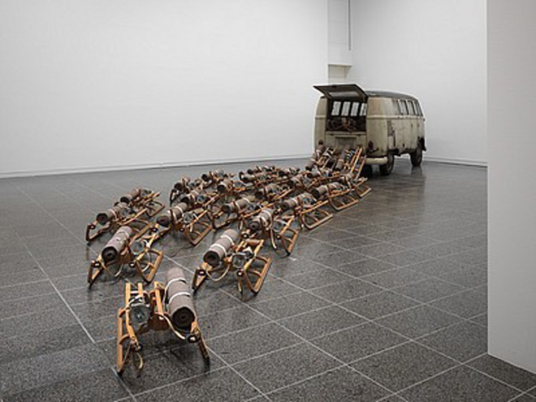
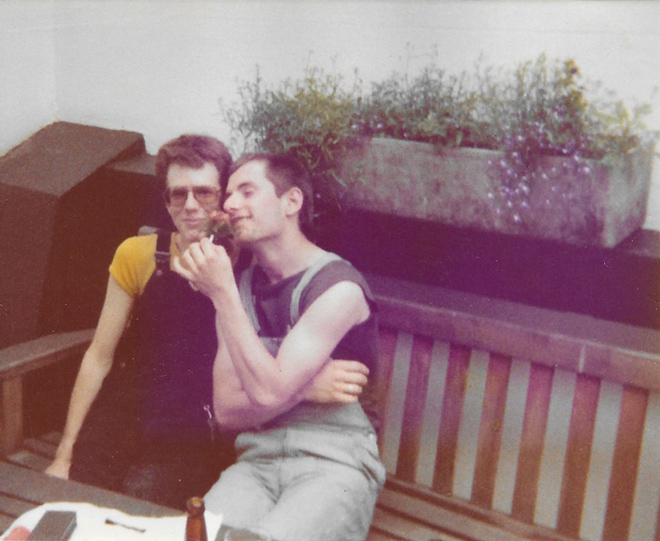
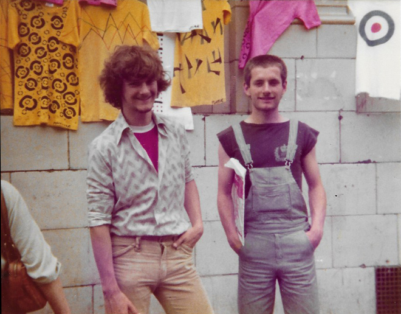
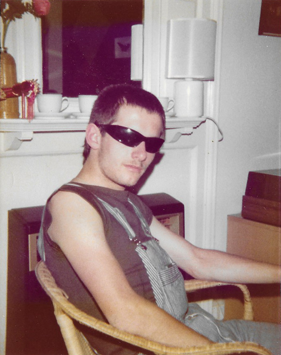
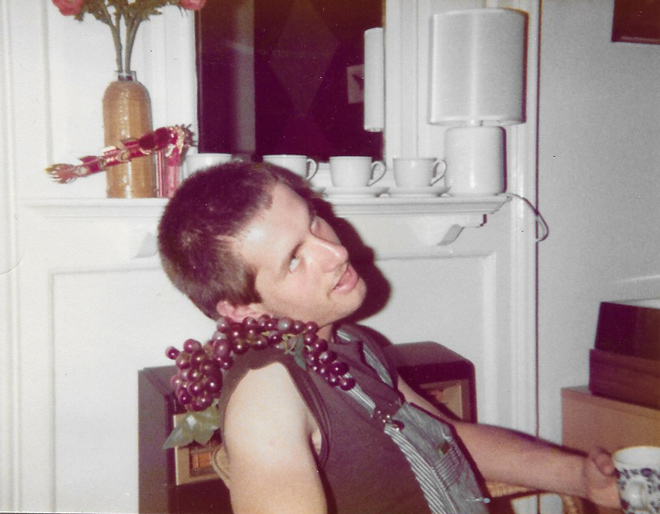